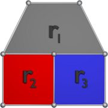

Player implementations are external to the game itself. A player is a separate executable that communicates with the game via standard input and standard output. The player is executed when the game starts up and continues running until the game is finished. At the start of the game, the game engine sends each player a description of the field geometry. At the start of each turn, the game engine sends the player a description of the current game state. The player reads this description from standard input, chooses a move for each pusher and sends it back by writing it to standard output.
At the start of the game, each player receives a description of the playing field. This description is given as a list of the vertices at the corners of the field regions and a list of the regions themselves.
The list of field vertices starts with a line containing a single positive integer, v, giving the number of vertices in the field. This is followed by v lines, each giving the integer X, Y and Z coordinates of a vertex. The ordering of vertices is significant. It is used in the region list that follows. The first vertex given is at index zero and the last vertex is at index v - 1.
The list of regions starts with a line containing a single positive integer, r, giving the number of regions in the field. This is followed by r lines, each describing a region. A region is described by a positive integer, k, giving the number of corners the region has. This is followed by k non-negative integers giving indices into the vertex list. Looking down, the vertices of a region are given in counter-clockwise order. The field will have no more than 200 vertices and no more than 200 regions.
The player is guaranteed that the field is always completely covered with convex polygon regions, and no regions overlap. Neighboring regions always share vertices along their boundaries. If the boundary of a region passes through a vertex, then the description of that region will include that vertex. For example, in the figure below, region r1 will include the top vertex connecting regions r2 and r3.
At the start of each turn, the game engine sends each player updated region colors, pusher positions and marker positions. This description starts with a line containing an integer, t, indicating the turn number. This value will normally start at zero and increment to 899 as the game progresses. If the player fails to respond promptly enough with a move for each pusher, the player may miss a turn. This will be indicated to a player by a skip in the turn number. When the game is over, a value of -1 is sent to the player to indicate that no more game states will follow. At this point, the player should exit.
The turn number is followed by a line giving the current score for each player, first an integer giving the score for the red player and then an integer giving the score for the blue player. Player scores are followed by a line giving the current color of each map region. This line will start with an integer, r, the number of regions on the map. This value will always match the value of r given at the start of the game. This will be followed by r values indicating the region colors in the same order the region list was given at the start of the game. Colors are described as follows.
| Value | Color |
|---|---|
| 0 | red |
| 1 | blue |
| 2 | grey |
The next section gives the location and state of all the pushers. This always starts with a line containing the value 6, the total number of pushers in the game. This is followed by 6 lines. Each of these lines consists of four floating point values, the X location of a pusher, the Y location of the pusher, the X component of the pusher's velocity and the Y component of the pusher's velocity. The first three pushers described are for the current player and the next three are for the opponent. Pusher descriptions are always given in the same order, and the order matches the ordering of initial positions given in the initial field section of the rules.
The final section of the game state description gives the locations, velocities and colors of all the markers. This starts with a line giving the number of markers, which is always 22. The next 22 lines describe each marker with five parameters. The first two are real values giving the X and Y coordinates of the marker center. The next two are real values giving the X and Y components of the marker velocity. The last is an integer giving the marker color according to the color table above.
For each player, the ordering of elements on the pusher list and the marker list remains the same from turn to turn. For example, if a particular marker is at index 7 in the marker list at turn 25, it will still be at index 7 for turn 26. The locations and velocities of moving objects may change from turn to turn, but the ordering of the pusher list and marker lists will let the player keep track of specific markers.
At each turn, the player is to print a desired move to standard output. The move is described by six floating point parameters, the X and Y components of an acceleration vector to be applied to the first pusher, the X and Y components of an acceleration vector to be applied to the second pusher, and the X and Y components of an acceleration vector to be applied to the third pusher. The six parameters for each move should be printed, space-separated on a single output line. To ensure that the game is able to read the move immediately after it is produced, the player should flush standard output after the move is printed.
As described in the pusher section of the rules, the game will limit each pusher acceleration vector to a magnitude of 2 and will constrain the pusher velocity to a magnitude of 6 after the acceleration is applied.
After a snapshot of the game state is sent, the player generally has one tenth of a second to respond with a move. For the first turn of the game, the player has a full second to respond, but subsequent turns give the player only 0.1 seconds. The additional time for the first move reflects the need to give languages like Java an opportunity to demand-load code used by the player. This can cause the first move to take longer than subsequent moves.
If the player fails to respond or if the response is received too late, the game will assign an acceleration vector of zero to all the player's pushers. The game expects to receive a move for each state that is sent to a player, but the game engine does not maintain a queue of game states on behalf of each player. If a player falls behind in parsing game states and responding with a desired move, the engine will discard, rather than queue, subsequent states for the player. A player that is too slow to respond will receive a sampling of the states, and the value of the turn number will indicate that one or more states have been dropped.
At the end of the game, a report is printed to standard output indicating any game states that were discarded without being sent to each player. Likewise, a list is printed reporting any moves that were not received from the player in time.
Communication with the player is encoded so that both players can be written as if they control the red player, the one that starts out in the front left corner of the field. Internally, the first player specified at startup is actually the red player. For communication with the second player, game state is encoded with coordinates for all geometry rotated 180 degrees about the center of the field. Colors are flipped so that the second player sees red game elements as blue and blue game elements as red. The ordering of field vertices, region lists, pusher lists and markers is also reversed so that the the blue player's initial view of the field is exactly like the red player's initial view. This is intended to simplify the design of the player somewhat. Developers may wish to hard-code some behaviors with field locations or other constants chosen at compile time.
Your player's standard output is used to communicate with the game engine. While developing your player, you will want to send any debugging output you need to standard error rather than standard output, so that the game engine doesn't think it's part of your move.
As described in the usage instructions, the game engine can operate synchronously with the player, waiting indefinitely for each move before performing the next simulation step. This lets the developer suspend the real-time response requirement during debugging. The game engine can also be configured to dump game state and player move information for every turn in a game. This can let the developer inspect the sequence of messages exchanged between game and player after a game is completed.
Players turns occur every 0.1 seconds. The 0.1 second delay is intended to give the player an adequate time to select a next move. However, displaying animation frames at this framerate yields a jumpy visualization. To help smooth things out, the game engine computes additional, intermediate states for animation. These are apparent when visualizing a live game and they affect the contents of the trace file when a game is recorded for later playback. This behavior should not be apparent to players participating in the game, but, if ignored, it might cause some confusion about apparent inconsistency between the player's view of the game and the contents of a saved game trace file.
Once you have a working player, you will want to submit it to the Queue ICPC Challenge site to see how it does against real opponents. For preliminary matches and for the final tournament, player code will be compiled and will run on a virtual machine running on a 3.0 Ghz Xeon processor installed with Ubuntu 10.4 Linux.
During matches, player code will have uncontested use of a single core and 1 GB of physical memory, except for the overhead associated with the operating system and the virtual machine environment. During execution, player submissions will be permitted to read from standard input and write to standard output and standard error. They may also open files in the current directory for reading and even create new threads. Attempts to access other system resources (e.g., read from files elsewhere, create network connections, start new processes) may result in disqualification.
Source code for a player may consist of multiple files, but all files must reside in a single directory. Java implementations should place all classes in the default package.
Submissions can include source files and data files supporting the player, but the submission for a single player cannot exceed 256 kilobytes in total size and 50 individual files. During execution, player's source code and any other submitted files will be available in the current directory.
For C/C++ submissions, all files ending in .cpp will be compiled and linked together into an executable. During compilation, the submission directory will be the current directory. Player code will be compiled with g++ version 4.4.3 with the -O option and will be linked with -lpthread. For Java submissions, all files ending in .java will be compiled with Sun JDK 1.6.0_20. Only one main function is expected in the resulting classes, and that class will be executed as the player.
For C# submissions, all files ending in .cs will be compiled with a single invocation of gmcs, version 2.4.4.0. The resulting executable will be run via mono.
For Python submissions, only on source file ending in .py is expected. This file will be run as the player using Python 2.6.5.
Javascript players are being run using Rhino 1.7 release 2. As with python, there should be only one file ending in .js. This file will be given to rhino on the command line. Javascript support is new for this competition. We welcome suggestions from Javascript programmers about what execution environment might be preferred.
Submission language is determined by the file name extensions used in the submission. Submissions that appear to contain a mixture of languages (e.g. some ending in .java and some in .cpp) will be considered invalid, as will submissions do not compile or do not have a single entry point.